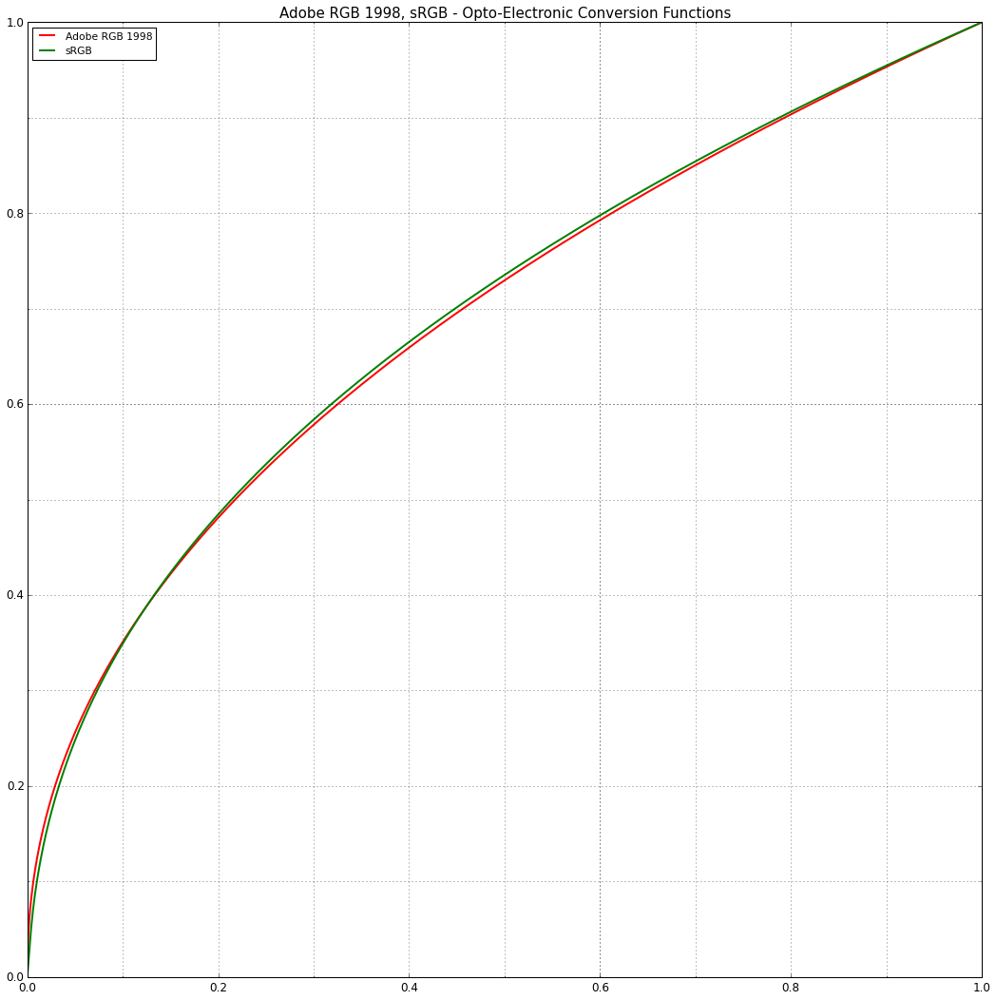
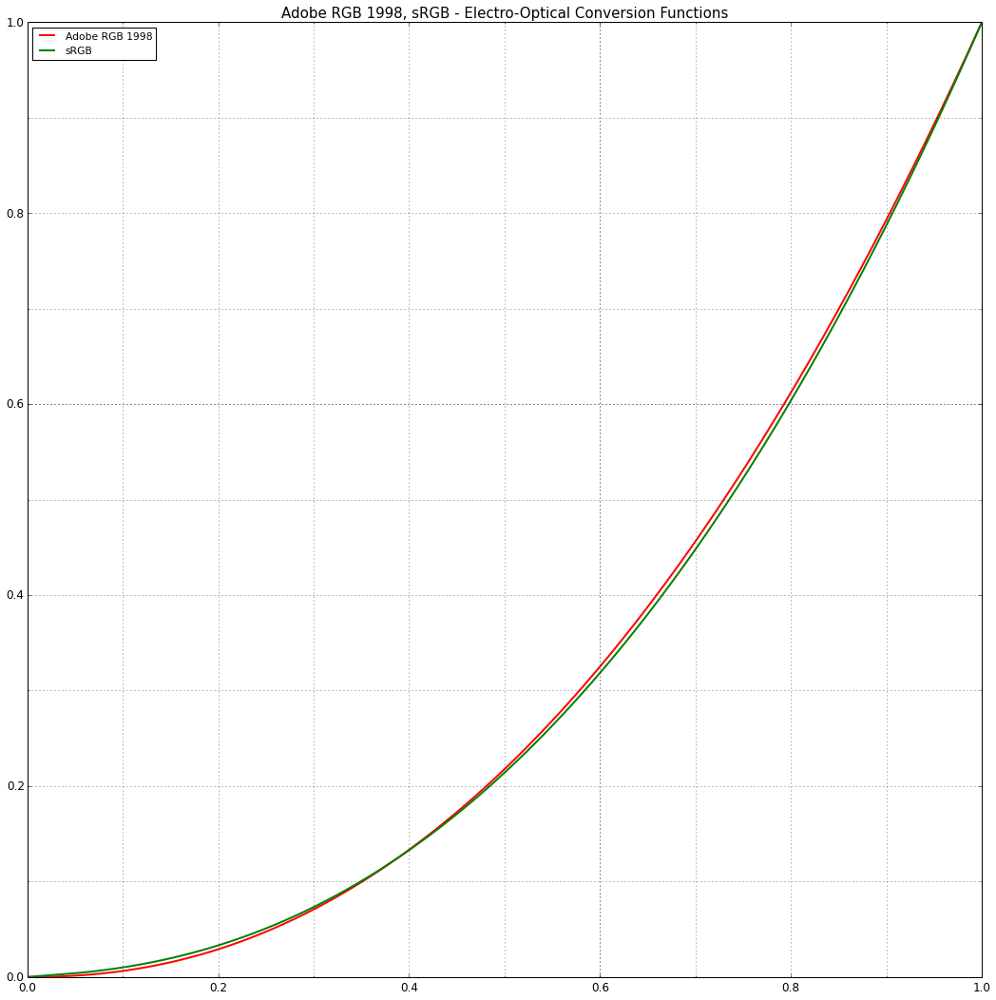

The Importance of Terminology and sRGB Uncertainty
We were meant to write that entry since a while, and a great post by Tom Forsyth from Oculus VR triggered us in doing so.
As I was quickly reading his article, I tweeted back about the missing description of sRGB as being an RGB colourspace: a set of primaries, whitepoint and conversion functions components.
The article first description of sRGB is as follows:
sRGB is a slight tweaking of the simple gamma 2.2 curve.
While this depiction of sRGB colourspace EOCF (Electro-optical conversion function) is exact, it may be confusing for non experts by omitting an explicit emphasis of the components of an RGB colourspace.
For people experienced with colour theory and science, the post title and the mention of gamma indicates that the article will likely only involves sRGB colourspace EOCF and OECF (Opto-electronic conversion function).
Tom confirms that intuition a few paragraph later:
(the broader sRGB standard also has a bunch of gamut and colour-transform specifications, but we’ll ignore those and just focus on the gamma-curve part for now, since that is what concerns us for graphics rendering)
What is sRGB?
Terminology in a given scientific domain is a key to its understanding, this is especially true in colour science. For example, everybody knows what is colour but yet only a few can define it properly, in that regard, we often cite Mark D. Fairchild:
Why should it be particularly difficult to agree upon consistent terminology in the field of color appearance? Perhaps the answer lies in the very nature of the subject. Almost everyone knows what color is. After all, they have had firsthand experience of it since shortly after birth. However, very few can precisely describe their color experiences or even precisely define color. [1]
sRGB is not a bunch of conversion functions, it is an actual RGB colourspace, specified by IEC 61966-2-1:1999 standard. An RGB colourspace is defined by those mandatory 3 components:
Primaries
The primaries chromaticity coordinates define the gamut (the triangle of colours) that can be encoded by a given RGB colourspace.
It is important to understand that while commonly represented as triangles on a Chromaticity Diagram (such as the CIE 1931 Chromaticity Diagram), RGB colourspace gamuts define the boundaries of an actual 3D volume within the CIE xyY colourspace: The Chromaticity Diagram is a 2D projection of the CIE xyY colourspace volume along its Y Luminance axis.

Various RGB colourspace gamuts compared in the CIE 1931 Chromaticity Diagram.

The CIE 1931 Chromaticity Diagram in the bottom right view is a 2D projection of the CIE xyY colourspace in the left view. (Colour - Analysis)
Whitepoint
The whitepoint defines the white colour for a given RGB colourspace. Any set of colours lying on the neutral axis passing through the whitepoint, no matter their Luminance, will be neutral to that RGB colourspace.

CIE Standard Illuminant D65 is located at the apex of sRGB colourspace volume. (Colour - Analysis)
An RGB colourspace can have different whitepoints depending its context usage, sRGB colourspace IEC 61966-2-1:1999 standard adopts CIE Standard Illuminant D65 as whitepoint but an ICC sRGB colourspace profile would likely have been chromatically adapted to CIE Standard Illuminant D50.

Various CIE Illuminants D Series illuminants in the CIE 1960 UCS Chromaticity Diagram.
Conversion Functions (OECF and EOCF)
The conversions functions perform the mapping between the linear light components (tristimulus values) and a non-linear R'G'B' video signal (most of the time for coding optimisation and bandwidth performance). [2]
-
The Opto-electronic conversion function (OECF) maps estimated tristimulus values in a scene to a non-linear R'G'B' video component signal value. Typical OECFs are expressed by a power function with an exponent between 0.4 and 0.5. They can also be defined as piece-wise function, sRGB, Rec. 709 or Rec. 2020 colourspace OECFs are such examples.
Various opto-electronic conversion functions.
-
The Electro-optical conversion function (EOCF) maps a non-linear R'G'B' video component signal to a tristimulus value at the display. Typical EOCFs are expressed by a power function with an exponent between 2.2 and 2.6 or a piece-wise function.
Various electro-optical conversion functions.
The Importance of Terminology
With the RGB colourspace specification components outlined, it should now make more sense why not being specific and using a clear terminology can lead to confusion and uncertainty: colour science vocabulary is complex.
I often encounter people that don’t have a clear understanding on what composes an RGB colourspace, as a result they don't properly differentiate gamut and conversion functions. The cursory terminology recurrently used online is probably the root cause for that.
When one talks about sRGB, is he describing the colourspace primaries or its conversion functions? Discussing about sRGB to linear transformation without emphasis on the EOCF component is unsettling: a rendering engine using linear sRGB colourspace input colours and textures, renders with the sRGB colourspace primaries and whitepoint (assuming no colour transformations are occurring internally), thus its output is within sRGB colourspace.
When rendering using Rec. 709 colourspace for TV, one is actually adopting sRGB colourspace primaries and whitepoint with different specific conversion functions.
Movie cameras such as Canon ones (Canon EOS 1DC, Canon CX00) use Rec. 709 primaries and whitepoint but encode their scene linear values with a custom log curve designated C-Log.
Likewise, it is perfectly valid to use the sRGB colourspace conversion functions with another set of primaries and whitepoint. When working within Adobe Photoshop or The Foundry Mari, some VFX studios use a proprietary colourspace specification along sRGB colourspace conversion functions: those conversion functions being commonly implemented in various DCC packages, the various colour transformation operations between those packages are simplified.
Conclusion
When one talks about sRGB alone, it should be safe to assume that he is referring to the sRGB colourspace as per IEC 61966-2-1:1999 standard, not just cherry picked components. Unfortunately it is not the case thus in order to lessen the uncertainty and improve the terminology used, we suggest that:
-
One remembers that a given RGB colourspace is defined by the following essential three components:
-
When writing on the RGB colourspace topic, one should ideally mention the previous point, it will help people getting the grasp on the theory.
-
When discussing about a given RGB colourspace component, one should make a point of describing which specification's component he is referring to:
sRGB is a slight tweaking of the simple gamma 2.2 curve.
would be better written as follows:
The sRGB conversion function is a slight tweaking of the simple gamma 2.2 curve.
or for completeness:
The sRGB electro-optical conversion function (EOCF) is a slight tweaking of the simple gamma 2.2 curve.
-
When describing an RGB colourspace not supported by an official specification or standard, one should probably use a name that explicitly defines the complete specification:
- sRGB-D60-Linear: an RGB colourspace using sRGB primaries chromatically adapted to CIE Standard Illuminant D60 whitepoint and linear conversion functions.
- Adobe 1998 RGB-D65-Gamma1.8: an RGB colourspace using Adobe 1998 RGB primaries, CIE Standard Illuminant D65 whitepoint and gamma 1.8 conversion functions.
In the near future it will likely become even more critical and relevant as new RGB colourspaces such as Rec. 2020 or the ACES encodings become mainstream.
Comments
Comments powered by Disqus